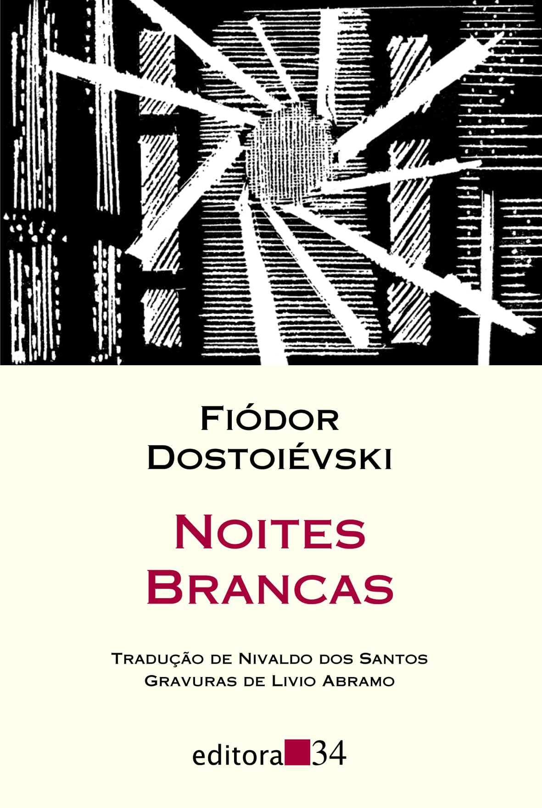
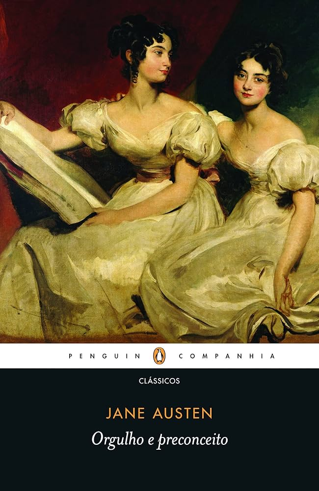
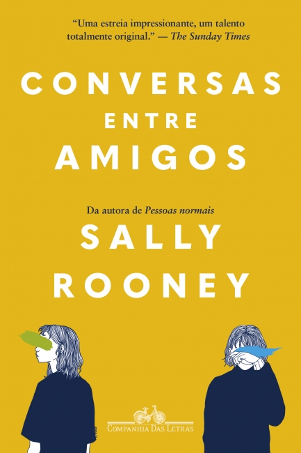
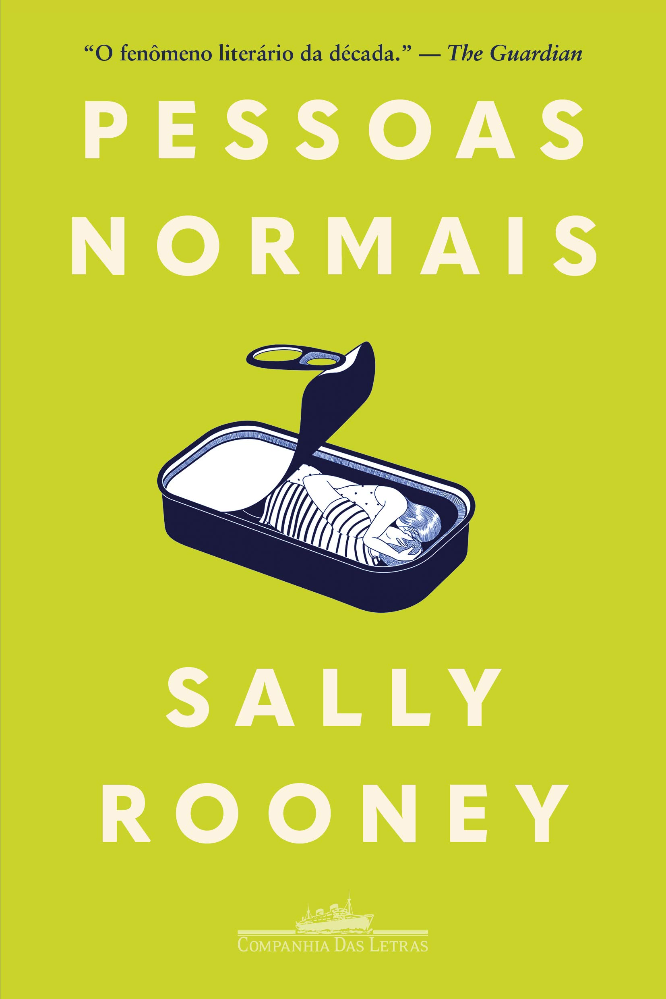
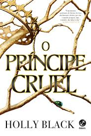
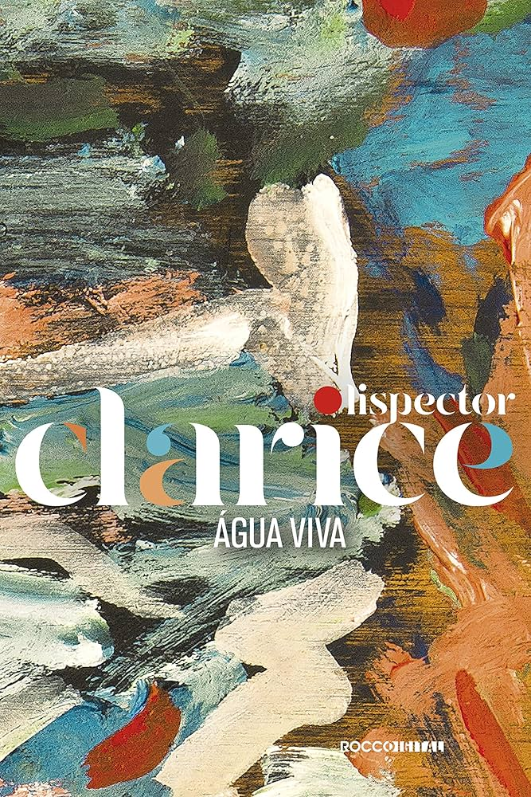
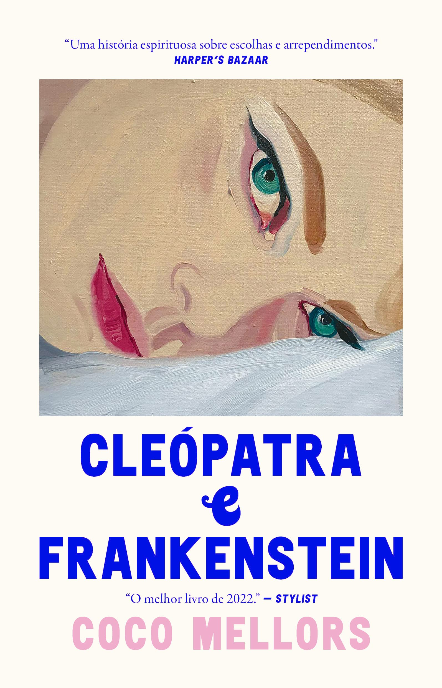
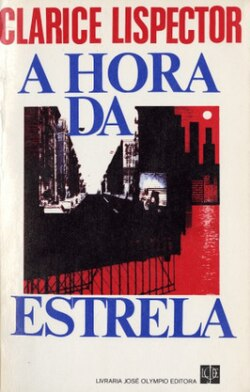
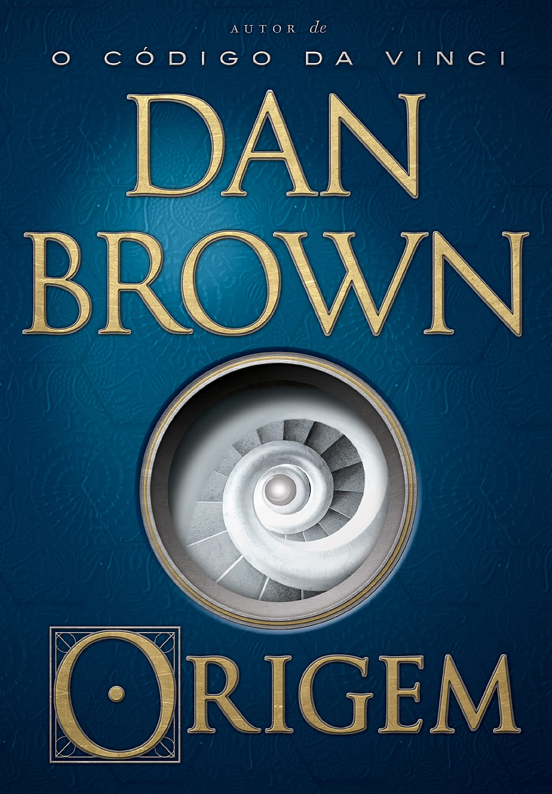

Gregor Samsa se transforma em um inseto e enfrenta dilemas existenciais.

Noites Brancas
Fiódor Dostoiévski
Ficção
Um conto romântico e introspectivo ambientado nas noites de São Petersburgo.

Orgulho e Preconceito
Jane Austen
Romance Clássico
Elizabeth Bennet e Sr. Darcy se enfrentam em uma história repleta de ironia e amor
improvável.
Pequena coreografia do adeus
Aline Bei
Ficção Doméstica
Pequena Coreografia do Adeus é sobre descobertas, sobre conseguir compreender
algumas coisas, aceitar ou não, mas principalmente: seguir em frente apesar de tudo.

Conversas entre amigos
Sally Rooney
Romance, Ficção literária
Conversas entre amigos é uma exploração das complexidades das relações modernas,
centrada em duas amigas e suas interações com um casal mais velho.

Pessoas Normais
Sally Rooney
Romance, Ficção literária
Pessoas Normais é uma exploração das complexidades das relações modernas, centrada
em dois amigos e suas interações ao longo dos anos.
Tudo é rio
Carla Madeira
Romance de amor
Tudo é rio é uma narrativa poética que explora as nuances do amor e da perda,
entrelaçando as vidas de seus personagens de maneira profunda e comovente.

O Príncipe Cruel
Holly Black
Literatura fantástica
O Príncipe Cruel é uma história de intriga e poder, onde a protagonista se vê
envolvida em um mundo de traições e alianças inesperadas.

Água Viva
Clarice Lispector
Ficção
Obsessivamente, a protagonista de Água Viva busca surpreender as intrincadas
relações entre o instante fugidio e sua inscrição no espaço.

Cleopatra e Frankenstein
Coco Mellors
Humor, Ficção urbana
Cleo, uma pintora inglesa de vinte e quatro anos, ainda está tentando encontrar o
seu lugar na intensa Nova York, quando, alguns meses antes de seu visto de estudante vencer, conhece Frank.
Vidas Secas
Graciliano Ramos
Romance, Literatura Brasileira
Vidas Secas é um retrato da vida de uma família de retirantes nordestinos,
abordando temas como a seca, a pobreza e a luta pela sobrevivência.

A Hora da Estrela
Clarice Lispector
Romance, Literatura Brasileira
A Hora da Estrela é a história de Macabéa, uma jovem nordestina que se muda para o
Rio de Janeiro em busca de uma vida melhor, mas enfrenta a solidão e a indiferença da sociedade.
As Vantagens de Ser Invisível
Stephen Chbosky
Ficção, Literatura Americana
As Vantagens de Ser Invisível é um romance epistolar que aborda temas como amizade,
amor e a busca pela identidade durante a adolescência.

A Origem
Dan Brown
Ficção, Thriller
A Origem é um thriller que explora questões sobre ciência, religião e a busca pelo
conhecimento, enquanto o protagonista, Robert Langdon, tenta desvendar um mistério que pode mudar o futuro da
humanidade.